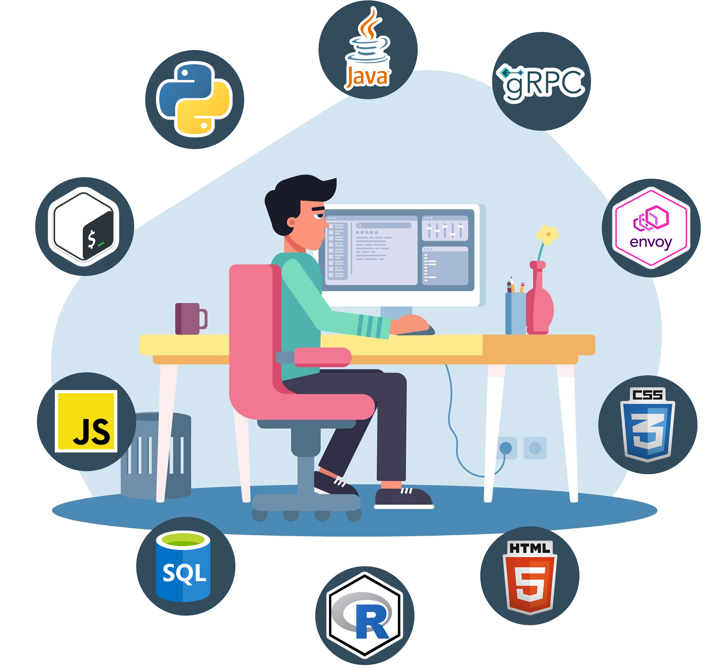

Hi, I'm James. I build things sometimes it results in something great...
Other times I'm banging my head against a wall for 'unrelated' reasons.
whoami
tldr: I'm a software developer / AI tinkerer / average runner / fair-weather cyclist from Cambridge, UK. You know, the one with the fancy university that I didn't get in to.
I'm a Senior AI Applied Innovation Specialist in AstraZeneca's Enterprise AI team. That's the job title; the bit I enjoy is building useful software with the people who need it. These days that means tools powered by large language models, helping colleagues find expertise, connect projects and make better-informed decisions.
I joined AZ in Cambridge in 2019 as a bioinformatics apprentice, completing an MSc in Applied Bioinformatics at Cranfield along the way. Seven years of full-stack development later, I've worked on everything from visualising therapeutic lineage to optimising mRNA sequences. The common thread is making complicated work a little simpler, so scientists can spend more time on the science.

Surprisingly, there isn't an action shot of me doing any programming, so you'll have to imagine this is me.
Java was my first love, but these days I also work with a whole stack of things. I've spent a lot of time doing full-stack development (this site is static html, because KISS). I enjoy the whole journey: talking through a problem, building the application and keeping it running. Along the way, I've mentored early-career developers, led recruitment and looked after the servers behind our tools.
The tinkering carries on at home, where an Ubuntu server and a stack of Docker containers give me plenty of excuses to learn something new. I'm also teaching myself Neo4j and keeping an eye on what's happening in AI and machine learning.
Away from a keyboard, you'll find me running, cycling or on a squash court. I also like swapping Cambridge's famously flat terrain for a hike in the mountains; most recently on a section of the Alta Via 1 in the Dolomites. Otherwise, there's a pile of fantasy novels and non-fiction competing for my attention (the stack's push rate is greater than the pop rate...).


Some things I've done
From helping scientists design mRNA to finding another excuse to run a server at home. A few things I've been building.

Scientific software
RNAopt
Helping scientists optimise mRNA sequences for expression, with an in-house web application, batch processing and an API for larger workflows.
Read more
Personal project
Home lab
An Ubuntu server, a stack of Docker containers and a growing list of things to try (read: 'break'). My own space to host applications and learn by doing.
Read more
Applied AI
Finding expertise with AI
A RAG tool that helps colleagues discover projects and subject-matter experts at AstraZeneca, starting with a plain-language query.
Read moreThe story so far
A background in biology, a growing interest in code, and a few roles that brought the two together.
-
2026 – present
Applied AI at AstraZeneca
Building tools to connect people, projects and knowledge in the Enterprise AI team.
-
2023 – 2026
Senior Data Scientist
Developing RNAopt, supporting scientific applications and helping the team grow.
-
2019 – 2023
From apprentice to developer
An MSc in bioinformatics alongside hands-on software development at AstraZeneca, followed by a Data Scientist role.
-
2017 – 2018
A year in the lab at GSK
A fermentation-science placement, and an early opportunity to make laboratory work simpler with software.